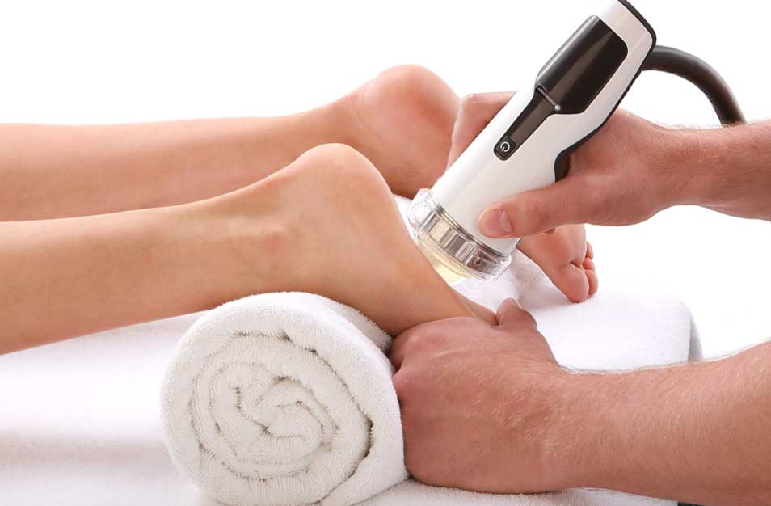

Se ha demostrado que la terapia de "ondas de choque enfocadas" reduce el dolor y la inflamación, así como también acelera la curación de los tejidos. Básicamente, puede ayudar a acelerar su recuperación para que pueda volver a lo que ama de manera más rápida y efectiva.
Si bien las ondas de choque tiene grandes ventajas para ayudar con el dolor y la curación, no es un tratamiento independiente y solo debe realizarse como un aspecto de un plan de tratamiento integral. Tampoco es ideal para todos ni para todas las condiciones, ¡así que reserve una consulta hoy para ver si puede ayudarlo a mejorar antes!
Con que puede ayudarte la onda de choque?
- Calcificaciones y tendonipatías de la rodilla, tobillo y hombro
- Fascitis plantar/espolones calcáneos
- Tendinopatías Aquileanas
- Tendinopatías crónicas
- Tendinopatías insercionales (isquiotibiales,cuadriceps,patelares)
- Sindrome estrés medial de la tibia
- Dolor referido al trocanter mayor
